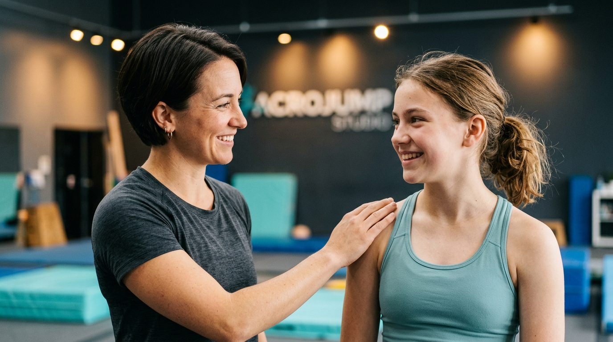
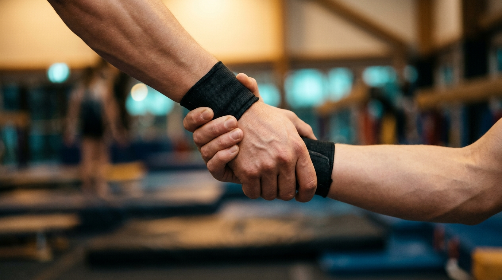
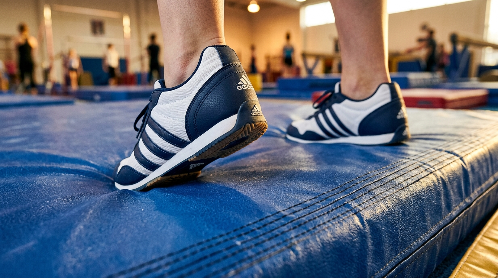
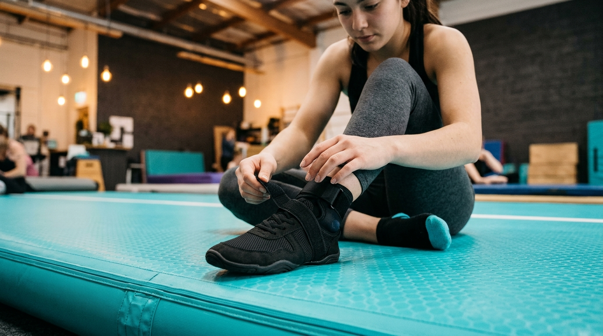

Mano de apoyo y corrección cercana
Candid cálido: mano de apoyo del profe en el hombro antes de un salto. Miradas relajadas, fondo del taller Acro con pared carbón, luces cálidas y colchonetas turquesa en bokeh suave.
💾 DESCARGAR JPG ALTA CALIDAD

Chocada de manos y festejo tras caer bien
Conexión humana genuina, risas y festejo luego de una recepción limpia. El ambiente de taller donde no hay presión ni rigidez de gimnasio olímpico.
💾 DESCARGAR JPG ALTA CALIDAD
Agarre protector muñeca a muñeca
Plano macro del agarre de seguridad con muñequeras de tela, piel limpia sin una pizca de polvo de tiza, luz de recorte cálida y bokeh del espacio en carbón y cian.
💾 DESCARGAR JPG ALTA CALIDAD

Recepción limpia en colchoneta técnica
Ángulo bajo mostrando la textura de vinilo azul/carbón, costuras reforzadas y la amortiguación del impacto al apoyar los pies con seguridad y estabilidad.
💾 DESCARGAR JPG ALTA CALIDAD

Detalle de calzado y airtrack turquesa
Momento tranquilo antes de arrancar, acomodándose las medias sobre la superficie texturada turquesa del airtrack, con iluminación de estudio limpia y acogedora.
💾 DESCARGAR JPG ALTA CALIDAD